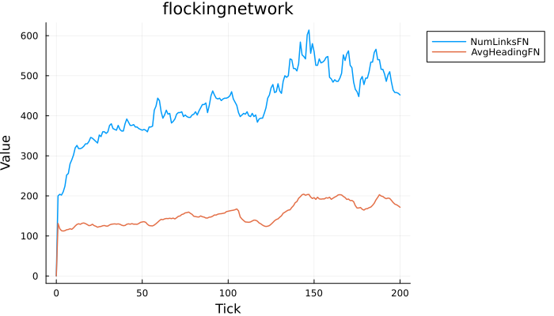
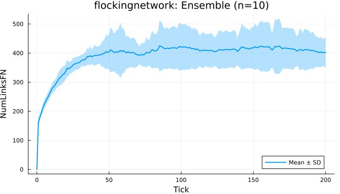
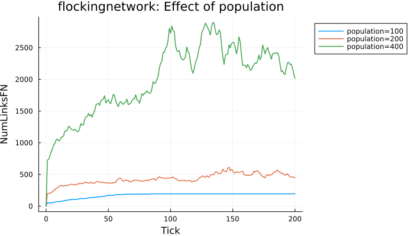

Flocking Network
Overview
WHAT IS IT?
This model is an attempt to mimic the flocking of birds. (The resulting motion also resembles schools of fish.) The flocks that appear in this model are not created or led in any way by special leader birds. Rather, each bird is following exactly the same set of rules, from which flocks emerge.
HOW IT WORKS
The birds follow three rules: “alignment”, “separation”, and “cohesion”.
“Alignment” means that a bird tends to turn so that it is moving in the same direction that nearby birds are moving.
“Separation” means that a bird will turn to avoid another bird which gets too close.
“Cohesion” means that a bird will move towards other nearby birds (unless another bird is too close).
When two birds are too close, the “separation” rule overrides the other two, which are deactivated until the minimum separation is achieved.
The three rules affect only the bird’s heading. Each bird always moves forward at the same constant speed.
THINGS TO NOTICE
Central to the model is the observation that flocks form without a leader.
There are no random numbers used in this model, except to position the birds initially. The fluid, lifelike behavior of the birds is produced entirely by deterministic rules.
Also, notice that each flock is dynamic. A flock, once together, is not guaranteed to keep all of its members. Why do you think this is?
After running the model for a while, all of the birds have approximately the same heading. Why?
Sometimes a bird breaks away from its flock. How does this happen? You may need to slow down the model or run it step by step in order to observe this phenomenon.
THINGS TO TRY
Play with the sliders to see if you can get tighter flocks, looser flocks, fewer flocks, more flocks, more or less splitting and joining of flocks, more or less rearranging of birds within flocks, etc.
You can turn off a rule entirely by setting that rule’s angle slider to zero. Is one rule by itself enough to produce at least some flocking? What about two rules? What’s missing from the resulting behavior when you leave out each rule?
Will running the model for a long time produce a static flock? Or will the birds never settle down to an unchanging formation? Remember, there are no random numbers used in this model.
EXTENDING THE MODEL
Currently the birds can “see” all around them. What happens if birds can only see in front of them? The in-cone primitive can be used for this.
Is there some way to get V-shaped flocks, like migrating geese?
What happens if you put walls around the edges of the world that the birds can’t fly into?
Can you get the birds to fly around obstacles in the middle of the world?
What would happen if you gave the birds different velocities? For example, you could make birds that are not near other birds fly faster to catch up to the flock. Or, you could simulate the diminished air resistance that birds experience when flying together by making them fly faster when in a group.
Are there other interesting ways you can make the birds different from each other? There could be random variation in the population, or you could have distinct “species” of bird.
NETLOGO FEATURES
Notice the need for the subtract-headings primitive and special procedure for averaging groups of headings. Just subtracting the numbers, or averaging the numbers, doesn’t give you the results you’d expect, because of the discontinuity where headings wrap back to 0 once they reach 360.
RELATED MODELS
- Moths
- Flocking Vee Formation
- Flocking - Alternative Visualizations
CREDITS AND REFERENCES
This model is inspired by the Boids simulation invented by Craig Reynolds. The algorithm we use here is roughly similar to the original Boids algorithm, but it is not the same. The exact details of the algorithm tend not to matter very much – as long as you have alignment, separation, and cohesion, you will usually get flocking behavior resembling that produced by Reynolds’ original model. Information on Boids is available at https://web.archive.org/web/20210818090425/http://www.red3d.com/cwr/boids/.
HOW TO CITE
If you mention this model or the NetLogo software in a publication, we ask that you include the citations below.
For the model itself:
- Wilensky, U. (1998). NetLogo Flocking model. http://ccl.northwestern.edu/netlogo/models/Flocking. Center for Connected Learning and Computer-Based Modeling, Northwestern University, Evanston, IL.
Please cite the NetLogo software as:
- Wilensky, U. (1999). NetLogo. http://ccl.northwestern.edu/netlogo/. Center for Connected Learning and Computer-Based Modeling, Northwestern University, Evanston, IL.
COPYRIGHT AND LICENSE
Copyright 1998 Uri Wilensky.

This model is licensed under the Creative Commons Attribution-NonCommercial-ShareAlike 3.0 License. To view a copy of this license, visit https://creativecommons.org/licenses/by-nc-sa/3.0/ or send a letter to Creative Commons, 559 Nathan Abbott Way, Stanford, California 94305, USA.
NetLogo itself is free software for non-commercial use under the terms of the GNU General Public License (see full license information here).
To inquire about commercial licenses for either NetLogo or specific models from the models library, please contact netlogo-commercial-admin@ccl.northwestern.edu.
This model was created as part of the project: CONNECTED MATHEMATICS: MAKING SENSE OF COMPLEX PHENOMENA THROUGH BUILDING OBJECT-BASED PARALLEL MODELS (OBPML). The project gratefully acknowledges the support of the National Science Foundation (Applications of Advanced Technologies Program) – grant numbers RED #9552950 and REC #9632612.
This model was converted to NetLogo as part of the projects: PARTICIPATORY SIMULATIONS: NETWORK-BASED DESIGN FOR SYSTEMS LEARNING IN CLASSROOMS and/or INTEGRATED SIMULATION AND MODELING ENVIRONMENT. The project gratefully acknowledges the support of the National Science Foundation (REPP & ROLE programs) – grant numbers REC #9814682 and REC-0126227. Converted from StarLogoT to NetLogo, 2002.
Parameters
| Parameter | Type | Default | Description |
|---|---|---|---|
population | Int | 200 | population |
maximum_separation | Float64 | 3.0 | maximum separation |
minimum_separation | Float64 | 1.0 | minimum separation |
coupling_strength | Float64 | 0.5 | coupling strength |
coherence_strength | Float64 | 0.5 | coherence strength |
separation_strength | Float64 | 0.5 | separation strength |
alignment_strength | Float64 | 0.5 | alignment strength |
grid_width | Int | 81 | grid width |
grid_height | Int | 81 | grid height |
max_ticks | Int | 200 | max ticks |
Source Code
The Julia code to run this model:
using ArkModelZoo
_, trajectory = run_flockingnetwork()Time Series

Ensemble Runs
Ten replicates with different random seeds, showing mean ± standard deviation.

Parameter Sensitivity
Varying population.

Appendix: Source Code
This model is implemented in the Ark.jl Entity-Component-System (ECS) framework. The code is split into five files, each with a distinct role:
- Parameters: a mutable struct holding all configurable values.
- Components: lightweight data types attached to individual entities (agents).
- Resources: world-level shared state accessible to all systems.
- Systems: functions that operate on entities each tick, defining model behavior.
- Model: wiring that assembles the world, registers resources and systems, and provides the run entry point.
Parameters (parameters.jl)
The parameter struct uses @kwdef so that every field has a default value and can be overridden by keyword. These defaults match the original NetLogo model’s slider settings.
Base.@kwdef mutable struct FlockingNetworkParams
population::Int = 200
maximum_separation::Float64 = 3.0
minimum_separation::Float64 = 1.0
coupling_strength::Float64 = 0.5
coherence_strength::Float64 = 0.5
separation_strength::Float64 = 0.5
alignment_strength::Float64 = 0.5
grid_width::Int = 81
grid_height::Int = 81
max_ticks::Int = 200
seed::Int = 42
endComponents (components.jl)
Components are lightweight data types attached to individual entities (agents). Mutable structs hold per-entity state, while empty tag structs act as markers for the ECS query system to efficiently filter entities.
mutable struct FNPosition
x::Float64
y::Float64
end
mutable struct FNHeading
angle::Float64
end
struct FNTag endResources (resources.jl)
Resources are world-level singletons shared across all systems, used for global state and aggregate statistics.
mutable struct FNStats
num_links::Int
avg_heading::Float64
end
FNStats() = FNStats(0, 0.0)Systems (systems.jl)
Systems contain the model logic and execute in a defined order each tick. Each system struct implements either initialize! (run once at setup) or update! (run every tick).
# Flocking with Network Links
# Turtles form pos/neg weighted links based on distance and adjust heading
struct InitFlockingNetworkSystem <: System end
function initialize!(::InitFlockingNetworkSystem, world::World)
params = get_resource(world, FlockingNetworkParams)
rng = get_resource(world, RNGResource).rng
wf = Float64(params.grid_width)
hf = Float64(params.grid_height)
for _ in 1:params.population
x = rand(rng) * wf
y = rand(rng) * hf
heading = Float64(rand(rng, 0:359))
new_entity!(world, (FNPosition(x, y), FNHeading(heading), FNTag()))
end
return nothing
end
struct FNFlockSystem <: System
positions::Vector{Tuple{Entity,Float64,Float64,Float64}}
end
FNFlockSystem() = FNFlockSystem(Tuple{Entity,Float64,Float64,Float64}[])
function update!(sys::FNFlockSystem, world::World)
params = get_resource(world, FlockingNetworkParams)
rng = get_resource(world, RNGResource).rng
stats = get_resource(world, FNStats)
wf = Float64(params.grid_width)
hf = Float64(params.grid_height)
max_sep = params.maximum_separation
min_sep = params.minimum_separation
coupling = params.coupling_strength
coherence = params.coherence_strength
separation = params.separation_strength
alignment = params.alignment_strength
# Collect all agents
empty!(sys.positions)
for (eids, positions, headings) in Query(world, (FNPosition, FNHeading); with=(FNTag,))
@inbounds for i in eachindex(eids)
push!(sys.positions, (eids[i], positions[i].x, positions[i].y, headings[i].angle))
end
end
n = length(sys.positions)
num_links = 0
# For each turtle: find neighbors, compute avg headings, update heading
# NetLogo ask shuffles
order = collect(1:n)
Random.shuffle!(rng, order)
for idx in order
(eid, x, y, h) = sys.positions[idx]
# Find negative neighbors (within minimum_separation)
neg_headings = Float64[]
# Find positive neighbors (within maximum_separation but outside minimum_separation)
pos_headings = Float64[]
for jdx in 1:n
jdx == idx && continue
(_, ox, oy, oh) = sys.positions[jdx]
# Toroidal distance
ddx = abs(x - ox)
ddx = min(ddx, wf - ddx)
ddy = abs(y - oy)
ddy = min(ddy, hf - ddy)
dist = sqrt(ddx * ddx + ddy * ddy)
if dist <= min_sep
push!(neg_headings, oh)
num_links += 1
elseif dist <= max_sep
push!(pos_headings, oh)
num_links += 1
end
end
avg_head_pos = 0.0
avg_head_neg = 0.0
if !isempty(pos_headings)
avg_head_pos = sum(pos_headings) / length(pos_headings)
end
if !isempty(neg_headings)
avg_head_neg = sum(neg_headings) / length(neg_headings)
end
# NetLogo: heading + coupling * (coherence*(avg_pos - heading) + separation*(180+avg_neg-heading) + alignment*(0.5*(avg_neg+avg_pos)-heading))
new_h = h + coupling * (
coherence * (avg_head_pos - h) +
separation * (180.0 + avg_head_neg - h) +
alignment * (0.5 * (avg_head_neg + avg_head_pos) - h)
)
# Update heading in ECS
for (_, _, headings) in Query(world, (FNPosition, FNHeading); with=(FNTag,))
@inbounds for i in eachindex(headings)
# Find matching entity by comparing stored data
end
end
# Store updated heading back
sys.positions[idx] = (eid, x, y, new_h)
end
# Apply heading updates and move forward by 1
# Build a map from entity to new heading
heading_map = Dict{Entity, Float64}()
for (eid, _, _, h) in sys.positions
heading_map[eid] = h
end
for (eids, positions, headings) in Query(world, (FNPosition, FNHeading); with=(FNTag,))
@inbounds for i in eachindex(eids)
if haskey(heading_map, eids[i])
headings[i].angle = heading_map[eids[i]]
end
θ = deg2rad(headings[i].angle)
positions[i].x = mod(positions[i].x + sin(θ), wf)
positions[i].y = mod(positions[i].y + cos(θ), hf)
end
end
# Links are undirected, counted from both sides
stats.num_links = div(num_links, 1) # each pair counted once per idx
# Compute average heading
if n > 0
total_h = 0.0
for (_, _, _, h) in sys.positions
total_h += h
end
stats.avg_heading = total_h / n
else
stats.avg_heading = 0.0
end
return nothing
end
struct FNTerminationSystem <: System end
function update!(::FNTerminationSystem, world::World)
params = get_resource(world, FlockingNetworkParams)
tick = get_resource(world, Tick)
if tick.tick + 1 >= params.max_ticks
get_resource(world, Terminate).stop = true
end
return nothing
endModel (model.jl)
The model file assembles all pieces: it creates the ECS World with the required component types, registers resources, builds the Scheduler with systems in execution order, and exposes the public run entry point. The observer pattern records the trajectory each tick.
function flockingnetwork_world(; initial_capacity::Int = 256)
return World(FNPosition, FNHeading, FNTag; initial_capacity = initial_capacity, allow_mutable = true)
end
function flockingnetwork_systems()
return (InitFlockingNetworkSystem(), FNFlockSystem(), FNTerminationSystem())
end
function flockingnetwork_model(params::FlockingNetworkParams = FlockingNetworkParams())
world = flockingnetwork_world()
_add_standard_resources!(world, params)
add_resource!(world, FNStats())
scheduler = Scheduler(world, flockingnetwork_systems())
initialize!(scheduler)
return scheduler
end
struct FNObserver end
function flockingnetwork_headers(::FNObserver)
return ["NumLinksFN", "AvgHeadingFN"]
end
function flockingnetwork_values(::FNObserver, world::World)
stats = get_resource(world, FNStats)
return Float64[stats.num_links, stats.avg_heading]
end
function run_flockingnetwork(; params::FlockingNetworkParams = FlockingNetworkParams(), observe::Bool = true)
return _run_model(flockingnetwork_model, FNObserver(), flockingnetwork_values; params, observe)
end